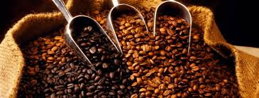

NUESTROS CAFÉS
El café es la bebida que se obtiene a partir de las semillas tostadas y molidas de los frutos de la planta del café. Es una bebida altamente estimulante por su contenido de cafeína. Suele tomarse durante el desayuno, después de éste o incluso como único desayuno, aunque también se acostumbra tomarlo después de las comidas o cenas, para entablar conversaciones o sólo por costumbre. Es una de las bebidas sin alcohol más socializadoras en muchos países. Las formas más populares de tomarlo son negro y con leche (con o sin azúcar); también se le suele añadir crema o nata, leche condensada, chocolate o algún licor ya dependiendo de la receta pues hay muchas maneras de prepararlo. Se sirve habitualmente caliente, pero también se toma frío o con hielo.En España, Portugal, Paraguay, Brasil y Argentina es frecuente el consumo de café torrado o torrefacto, es decir, tostado en presencia de azúcar.
CAFE ROBUSTA
Coffea canephora (café robusta; sin. Coffea robusta) es una especie de café (género Coffea) originaria del África occidental. Crece sobre todo en África y en Brasil, donde se conoce con el nombre de Conillon.
También
se halla en el sureste asiático, donde los colonialistas franceses introdujeron el cultivo en Vietnam a fines del s. XIX, y de allí pasó a Brasil. Es más fácil de cuidar que Coffea arabica y más barato de producir teniendo
un precio de mercado internacional por debajo del valor del dólar.
Mientras los granos de arabica son considerados superiores, robusta suele limitarse a grados menores de baja calidad. Se usa muy comúnmente para
elaborar café instantáneo, y en mezclas para espresso de bajas calidades para abaratar costos de torrefacción. La especie robusta tiene entre el doble y el triple de cafeína que el cafe arabica así como un elevado porcentaje
de materiales pesados. Aproximadamente un tercio del café del mundo es robusta.
Coffea canephora no se clasificó como especie de Coffea sino hasta fines del siglo XIX; después de Coffea arabica, en el s. XVIII. La
planta tiene un sistema radicular somero y crece como árbol o arbusto robusto de cerca de 10 metros.
Florece irregularmente, y todas las flores tardan en cuajar hasta 11 meses y producen granos ovales. La planta robusta
tiene mayor rendimiento de recolección que Coffea arabica y es menos susceptible a plagas y enfermedades, pero con sabor más amargo y ácido que coffea arabiga. La planta de la robusta tiene 22 cromosomas.
VOLVER ARRIBA
CAFE ARÁBIGA
El cafeto arábigo (Coffea arabica) es un arbusto de la familia de las rubiáceas nativo de Etiopía y/o Yemen; es la principal especie cultivada para la producción de café (obtenido a partir de las semillas tostadas), y la de
mayor antigüedad en agricultura, datándose su uso a finales del I milenio en la península arábiga.
Alcanza los 12 metros de altura en estado silvestre, con hojas opuestas, ovales u oblongas de color verde oscuro.
Las inflorescencias son axilares. Produce una drupa de color rojo brillante, que contiene dos semillas. Los frutos de C. arabica contienen menos cafeína que otras especies cultivadas comercialmente. Aunque el café es originario
del África del este, su cultivo tiene gran importancia económica en África y América. Brasil, Vietnam, Colombia y Honduras son los principales productores mundiales de café.
Estados Unidos representa el mayor mercado
mundial de café, seguido de Brasil, siendo este país asimismo el mayor productor de este cultivo en el mundo. Los países escandinavos y Finlandia son donde se consume más café por número de habitantes. El café tiene propiedades
diuréticas y estimulante.
La cafeína es un estimulante del sistema nervioso central, a nivel psíquico y también neuromuscular. Las sales potásicas le confieren un efecto diurético, reforzado por los ácidos clorogénicos,
responsables de su actividad como colerético y expectorante. Aumenta la motilidad gástrica y el peristaltismo intestinal.
VOLVER ARRIBA
CAFE ARÁBIGA TOSTADO
Durante el proceso de tostado, los granos de café pasan por distintas etapas. Primero, el agua contenida en los granos se evapora y éstos doblan su tamaño, ocasionando que su cubierta color gris se desprenda. El color de los
granos cambia de de verde claro a amarillo, luego a marrón claro y finalmente a marrón oscuro. Finalmente, se desarrolla el aroma del café debido a una serie de reacciones químicas.
Hay muchas categorías de tostado
de granos de café en el mercado, pero sólo se mencionarán las más conocidas: Tostado Oscuro ("Dark Roast ") - 14 minutos Los tostados más oscuros, como el tostado italiano, son también conocidos como "Heavy roast " (tostado
pesado). Los granos se tuestan hasta alcanzar un color casi negro, brindando un aroma y sabor ahumado que cubre los sabores naturales de los granos de café. Tostado Oscuro Mediano ("Medium dark Roast ") - 12 a 13 minutos
Este tipo de tostado se realiza durante un tiempo prolongado a una temperatura alta, con la finalidad de traer el aceite natural del grano hacia la superficie.
Full City Roast - Más oscuro que el City Roast. Tostado
Mediano ("Medium Roasts ") - 9 a 11 minutos Brindan flavor a los granos de café. Tostado Ligero ("Light Roasts ") - 7 minutos Brinda un ligero y sútil flavor.
VOLVER ARRIBA
CAFE CARACOLILLO
Cuando se habla de Café Caracolillo se hace referencia al tipo de grano que se puede encontrar en cualquier arábica. Por lo general, cada cereza de café contiene en su interior dos semillas (granos).
Cada uno de estos
granos ocupan una mitad de la esfera (o más bien ovoide) que forma la cereza en su interior. De ahí que tengan una parte más curva y otra (la interior) casi plana muy característica. Sin embargo, los granos de caracolillo
contienen una sola semilla.
Al desarrollarse en solitario, esta semilla crece en todas direcciones por igual y por lo tanto no aparece esa parte más plana que tienen los demás granos. A veces, estos granos adoptan
una forma más o menos esférica y otras veces casi se empiezan a enroscar sobre si mismos adoptando la forma que da nombre al ‘caracolillo’. En inglés se le denomina “Peaberry” que en una traducción (demasiado literal, eso
sí) sería “Cereza-Guisante” precisamente por su forma parecida a un guisante. Cómo ves la principal característica de este grano es su forma.
Un tostado diferente Debido a su forma (más esférica que el grano de café
tradicional) el proceso de tostado de estos granos es distinto y ha de ponerse especial cuidado en este proceso.
Por una parte, el grano de caracolillo rueda más facilmente en la cámara de la tostadora, por lo que
el tostado será más uniforme en este tipo de granos.
VOLVER ARRIBA